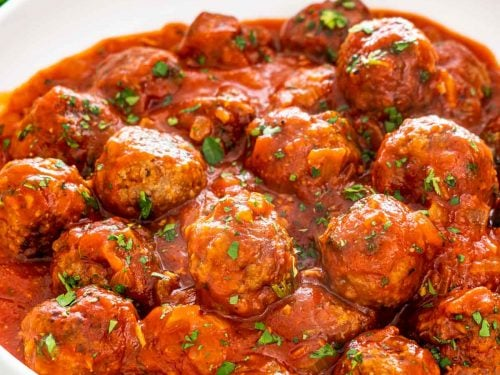

Joe's Pasta Sauce

Ingredients
- 2 lbs Ground Beef (80/20)
- 2 lbs Sausage (hot or mild)
- 2 cans Tomato Puree (28oz)
- 2 cans Tomato Paste (12oz)
- 3 Bay Leaves
- 2 tbs Parsley
- 1 tbs Oragano
- 1/2 tbs Sweet Basil
- 1 tbsp Pepper
- 1 Medium Red Onion (peeled)
- 6 Garlic Cloves (crushed)
- 2 cups Bread Crumbs
- 1 cup Red Wine
- 2-3 cans Water (28oz)
Steps
- Preheat oven to 300 degrees
- Mix bread crumbs and ground beef in a bowl
- Roll into meatballs making sure there are no cracks
- Cut sasuage into 1 inch pieces
- Place meatballs and sausage in the oven for 45 min to an hour
- Combine tomato puree, tomato paste, bay leaves, parsley, oragano, sweet basil, pepper, onion, garlic cloves, red wine, and 2 cans of water in a sauce pot at medium low heat for a minimum of 8 hours
- Add the last can of water depending on how thick you want the sauce. Thickness can also be adjusted by taking the top on and off.
- Add cooked meetballs and sausage into sauce